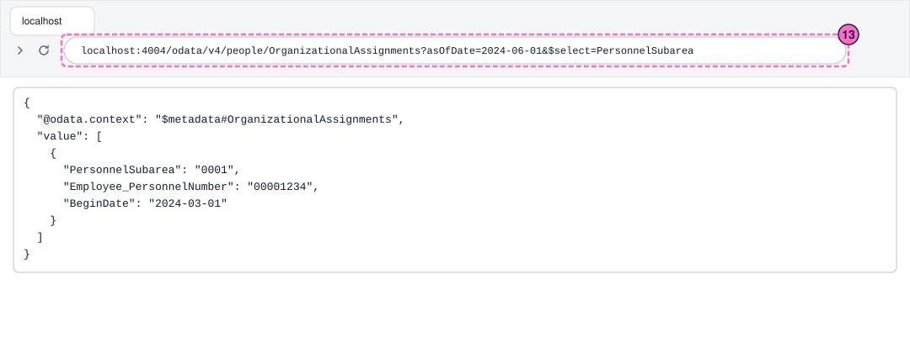
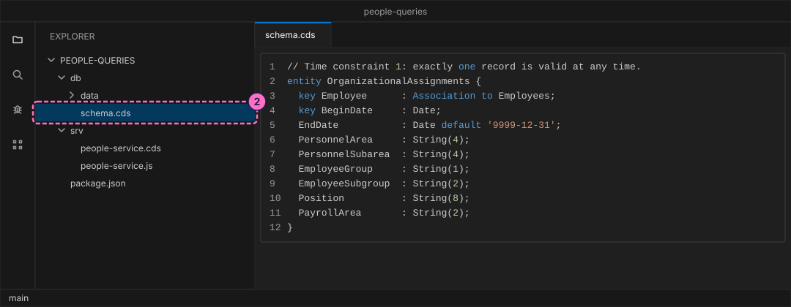
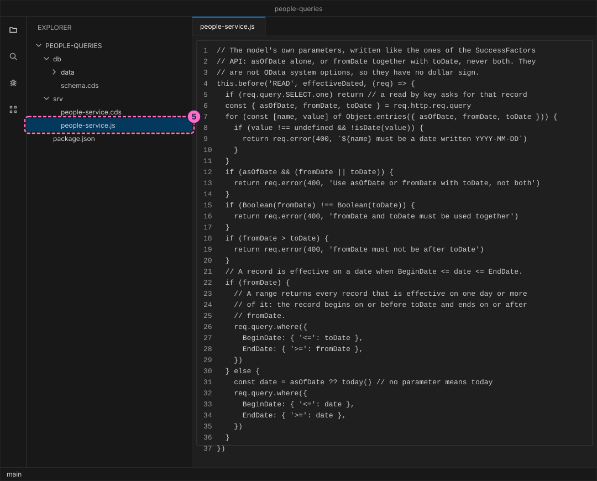
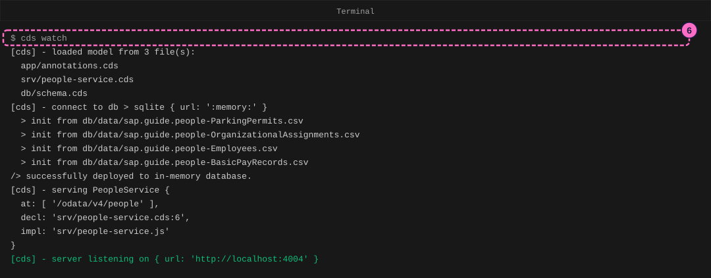
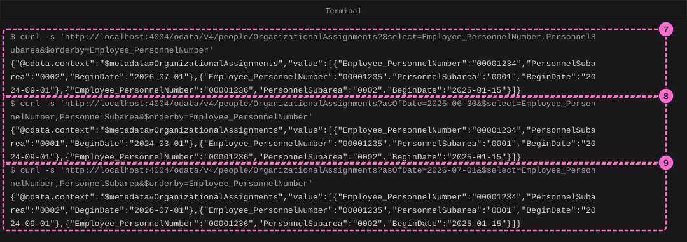
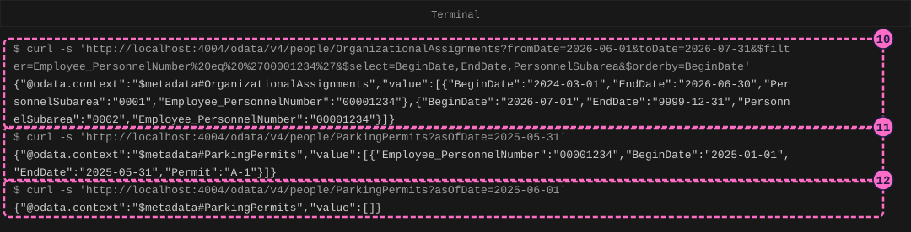
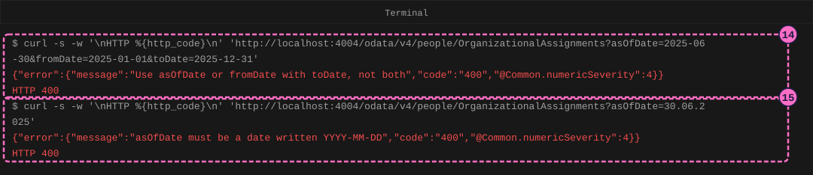

SAP HR Guide: Query Effective-Dated Employee Data
|
This content was generated with the assistance of AI and should be verified against the official documentation before being relied on in production. |
Checked on 2026-11-13 against CAP Node.js 10.2 (@sap/cds 10.2.2, @sap/cds-dk 10.2.1), OData V4, curl 8.7 and Node.js 24.21.
What you build
This is a teaching model built with CAP. It is not SAP S/4HANA or SAP SuccessFactors and does not reproduce their screens.
You build a small OData V4 service over employee records that are valid for a period, and you ask it two kinds of question. As of a date: which record was effective on 2025-06-30? Over a range: which records were effective at some time between 2026-06-01 and 2026-07-31? The three URL parameters are called asOfDate, fromDate and toDate, as in the SuccessFactors OData API, and they follow the rules that SAP’s reference states for them: a query uses either asOfDate or the pair fromDate and toDate, never both; the dates are written YYYY-MM-DD; and with no parameter the answer is the one of today. The service has no tenant behind it. It rejects a wrong question with HTTP 400 and a message, and for a record that does not exist on the date it answers an empty list.

Before you start
-
No account is needed: the CAP tools and curl install without signing in, and the service answers on your own computer. Installing
@sap/cds-dkmeans accepting the SAP Developer License Agreement, version 3.2, which the lab README names. -
Do the guide SAP HR Guide: Model Employee Records with Validity Periods first: this guide uses its model (the same entities and CSV data) and does not explain how a new record closes the old one. Knowing SAP Guide: Your First CAP Service and SAP Guide: Query OData Services helps too:
cds init,cds watch,$select,$filterand$orderbyare used here without much explanation. -
Read SuccessFactors OData API (the section on
asOfDate,fromDateandtoDate), Employee Central Data Models and MDF and Time Constraints and Validity Periods for the ideas that the model copies. -
You need curl 7.82 or newer, which has the option
--json; the steps of this guide only use plaincurl -s, so an older curl also works.curl --versionprints the version. You also need a shell such as bash or zsh, where single quotes keep the text as it is. -
Names that come from an SAP page: the parameter names
asOfDate,fromDateandtoDate, their YYYY-MM-DD format, the rule that a query uses one or the other, and the default of today come from the SAP SuccessFactors OData API reference (the pages Effective Dating and Effective Dated Query in OData, listed under Sources). Names that are the model’s own: the entities and fields of the model, the messages of the service, the rule thatfromDateandtoDatecome as a pair, and the way a range is matched. SAP’s pages that were read describe the parameters for the OData v2 API and do not describe them for the v4 API; this service is OData V4 because that is what CAP serves, so it shows the idea and not the behavior of a particular SuccessFactors service. -
The example is the one of the HR pages: Example Trading Co., personnel area
EX01, and the employees Ana Torres00001234, Ben Okoye00001235and Chloe Martin00001236. All codes and dates are invented example values, not values delivered by SAP. Dates in the model are writtenYYYY-MM-DD, as in code; the SAP screens of the reference pages showDD.MM.YYYY, so 01.07.2026 is2026-07-01. The high date 31.12.9999 is9999-12-31. -
The data starts where the first HR guide ended, and extends the example in the same made-up way: Ana moves from personnel subarea
0001to0002on2026-07-01, so she has two organizational records, and her parking permitA-1ended on2025-05-31. Ben and Chloe have one open-ended record each. -
The figures are drawings of the editor, the terminal and the browser, not screenshots. A highlighted box with a number marks the file, the line or the page part of the step with the same number.
Steps
Create the project and its data
-
Create a CAP project named
people-queriesand install it, as in the first guide:cds init people-queries --nodejs cd people-queries npm install -
Create
db/schema.cds. It is the model of the guide on validity periods:Employeesholds one row per personnel number, and each record entity has the employee and theBeginDateas its key and anEndDatethat defaults to the high date9999-12-31. The organizational assignments and the basic pay records follow time constraint 1 (exactly one record is valid at any time); the parking permits follow time constraint 2 (at most one record is valid, gaps are allowed).namespace sap.guide.people; // A teaching model of infotype-style employee records, not SAP S/4HANA and not // SAP SuccessFactors. Names, numbers and dates are invented example values. entity Employees { key PersonnelNumber : String(8); Name : String(40); EntryDate : Date; OrgAssignments : Composition of many OrganizationalAssignments on OrgAssignments.Employee = $self; BasicPay : Composition of many BasicPayRecords on BasicPay.Employee = $self; ParkingPermits : Composition of many ParkingPermits on ParkingPermits.Employee = $self; } // Time constraint 1: exactly one record is valid at any time. entity OrganizationalAssignments { key Employee : Association to Employees; key BeginDate : Date; EndDate : Date default '9999-12-31'; PersonnelArea : String(4); PersonnelSubarea : String(4); EmployeeGroup : String(1); EmployeeSubgroup : String(2); Position : String(8); PayrollArea : String(2); } // Time constraint 1 as well. entity BasicPayRecords { key Employee : Association to Employees; key BeginDate : Date; EndDate : Date default '9999-12-31'; PayBasis : String(10); Amount : Decimal(9,2); Currency : String(3) default 'EUR'; } // Time constraint 2: at most one record is valid at any time; gaps are allowed. // A record of the model's own, not an SAP infotype. entity ParkingPermits { key Employee : Association to Employees; key BeginDate : Date; EndDate : Date default '9999-12-31'; Permit : String(10); }
-
Create the four CSV files in
db/data. Ana has two organizational records, the second beginning the day after the first ends. Ben and Chloe have one record each, beginning on their hire dates. Ana’s permitA-1ends on2025-05-31, so from2025-06-01she has no permit.PersonnelNumber,Name,EntryDate 00001234,Ana Torres,2024-03-01 00001235,Ben Okoye,2024-09-01 00001236,Chloe Martin,2025-01-15Employee_PersonnelNumber,BeginDate,EndDate,PersonnelArea,PersonnelSubarea,EmployeeGroup,EmployeeSubgroup,Position,PayrollArea 00001234,2024-03-01,2026-06-30,EX01,0001,1,AA,51000001,E1 00001234,2026-07-01,9999-12-31,EX01,0002,1,AA,51000001,E1 00001235,2024-09-01,9999-12-31,EX01,0001,1,AA,51000002,E1 00001236,2025-01-15,9999-12-31,EX01,0002,1,AB,51000003,E1Employee_PersonnelNumber,BeginDate,EndDate,PayBasis,Amount,Currency 00001234,2024-03-01,9999-12-31,Monthly,4000.00,EUR 00001235,2024-09-01,9999-12-31,Monthly,2400.00,EUR 00001236,2025-01-15,9999-12-31,Hourly,14.00,EUREmployee_PersonnelNumber,BeginDate,EndDate,Permit 00001234,2025-01-01,2025-05-31,A-1
Write the date parameters
-
Create
srv/people-service.cds. It exposes the four entities as an OData V4 service. The annotation@readonlymakes the service answer reads only, because this guide only asks questions.using { sap.guide.people as db } from '../db/schema'; // Read-only: the guide only asks questions. The date parameters asOfDate, // fromDate and toDate are handled in people-service.js. @readonly service PeopleService { entity Employees as projection on db.Employees; entity OrganizationalAssignments as projection on db.OrganizationalAssignments; entity BasicPayRecords as projection on db.BasicPayRecords; entity ParkingPermits as projection on db.ParkingPermits; } -
Create
srv/people-service.js. Thebeforehandler forREADruns before every read of the three record entities. It takesasOfDate,fromDateandtoDatefrom the query string of the request. Each value that is given must be a real calendar day writtenYYYY-MM-DD;asOfDatemust not come withfromDateortoDate;fromDateandtoDatemust come together, andfromDatemust not be aftertoDate. Then the handler adds one condition to the query. A record is effective on a date whenBeginDateis on or before it andEndDateis on or after it. For a range, a record is returned when it is effective on at least one day of the range: it begins on or beforetoDateand ends on or afterfromDate. With no parameter the date is today. The parameters have no dollar sign, because OData reserves that for its own system query options and lets a service define others. The figure shows the part of the file that handles the parameters; the lines above it (the date check andtoday) are in the listing.import cds from '@sap/cds' const DATE = /^\d{4}-\d{2}-\d{2}$/ // A date as YYYY-MM-DD that is a real calendar day (2026-02-30 is not). const isDate = (text) => DATE.test(text) && new Date(`${text}T00:00:00Z`).toISOString().startsWith(text) // Today as YYYY-MM-DD in UTC. const today = () => new Date().toISOString().slice(0, 10) export default class PeopleService extends cds.ApplicationService { init() { const { OrganizationalAssignments, BasicPayRecords, ParkingPermits } = this.entities const effectiveDated = [OrganizationalAssignments, BasicPayRecords, ParkingPermits] // The model's own parameters, written like the ones of the SuccessFactors // API: asOfDate alone, or fromDate together with toDate, never both. They // are not OData system options, so they have no dollar sign. this.before('READ', effectiveDated, (req) => { if (req.query.SELECT.one) return // a read by key asks for that record const { asOfDate, fromDate, toDate } = req.http.req.query for (const [name, value] of Object.entries({ asOfDate, fromDate, toDate })) { if (value !== undefined && !isDate(value)) { return req.error(400, `${name} must be a date written YYYY-MM-DD`) } } if (asOfDate && (fromDate || toDate)) { return req.error(400, 'Use asOfDate or fromDate with toDate, not both') } if (Boolean(fromDate) !== Boolean(toDate)) { return req.error(400, 'fromDate and toDate must be used together') } if (fromDate > toDate) { return req.error(400, 'fromDate must not be after toDate') } // A record is effective on a date when BeginDate <= date <= EndDate. if (fromDate) { // A range returns every record that is effective on one day or more // of it: the record begins on or before toDate and ends on or after // fromDate. req.query.where({ BeginDate: { '<=': toDate }, EndDate: { '>=': fromDate }, }) } else { const date = asOfDate ?? today() // no parameter means today req.query.where({ BeginDate: { '<=': date }, EndDate: { '>=': date }, }) } }) return super.init() } }Sources: Effective Dated Query in OData (SAP Help), OData Version 4.01 Part 2: URL Conventions, section 5.2 Custom Query Options, CAP: Providing Services, custom code

Start the service and ask as of a date
-
In the terminal, in the project folder, start the server. The log shows the four CSV files loaded and
PeopleServiceserved at/odata/v4/peoplewith the implementationsrv/people-service.js. The figure leaves out the banner lines of the log.cds watch
-
Open a second terminal in the project folder. Ask for the organizational assignments without a date parameter. The address is in single quotes, so that the shell leaves the
$signs alone. The answer holds today’s record of each employee: three records, and Ana’s is the one from2026-07-01in personnel subarea0002. This is the answer of a run on 2026-11-13. The answer also holds the keyBeginDate, which the service adds to a$select.curl -s 'http://localhost:4004/odata/v4/people/OrganizationalAssignments?$select=Employee_PersonnelNumber,PersonnelSubarea&$orderby=Employee_PersonnelNumber' -
Ask as of
2025-06-30by addingasOfDate. The answer again holds one record per employee, but Ana’s is now the first one, from2024-03-01in personnel subarea0001. On 2025-06-30 she had not moved yet. Ben’s and Chloe’s records are the same as before, because each has only one.curl -s 'http://localhost:4004/odata/v4/people/OrganizationalAssignments?asOfDate=2025-06-30&$select=Employee_PersonnelNumber,PersonnelSubarea&$orderby=Employee_PersonnelNumber' -
Ask as of
2026-07-01, the day the second record begins. Ana’s answer is the second record, in personnel subarea0002. The day before,2026-06-30, belongs to the first record, because the first record ends on that day, and the dates are inclusive. On every day there is exactly one record for her, which is time constraint 1.curl -s 'http://localhost:4004/odata/v4/people/OrganizationalAssignments?asOfDate=2026-07-01&$select=Employee_PersonnelNumber,PersonnelSubarea&$orderby=Employee_PersonnelNumber'Source: Effective Dating (SAP Help)

Ask over a range and across a gap
-
Ask for the records of Ana that were effective at some time from
2026-06-01to2026-07-31, withfromDateandtoDate.%20is a space and%27a single quote, because curl refuses an address with a raw space. Both of her records are returned, the first because it ends on2026-06-30, inside the range, and the second because it begins on2026-07-01. A range returns every record that touches it, not only the one that is effective at the end.curl -s 'http://localhost:4004/odata/v4/people/OrganizationalAssignments?fromDate=2026-06-01&toDate=2026-07-31&$filter=Employee_PersonnelNumber%20eq%20%2700001234%27&$select=BeginDate,EndDate,PersonnelSubarea&$orderby=BeginDate' -
Ask for the parking permits as of
2025-05-31, the last day of Ana’s permit. The answer is the permitA-1, which is effective through its end date.curl -s 'http://localhost:4004/odata/v4/people/ParkingPermits?asOfDate=2025-05-31' -
Ask the same one day later, as of
2025-06-01. The answer is an empty list,"value":[], with HTTP 200. A permit follows time constraint 2, which allows a gap, so no record is effective on that day. An empty list is the answer for a date outside every record, not an error.curl -s 'http://localhost:4004/odata/v4/people/ParkingPermits?asOfDate=2025-06-01'
-
Ask who was employed on
2024-06-01. Open http://localhost:4004/odata/v4/people/OrganizationalAssignments?asOfDate=2024-06-01&$select=PersonnelSubarea in the browser. Only Ana’s record comes back, from2024-03-01: Ben was hired on2024-09-01and Chloe on2025-01-15, so on the asked date they have no record yet. The figure at the top of the page shows this answer.
See what the service rejects
-
Send
asOfDatetogether with a range. The service answers HTTP 400 and the messageUse asOfDate or fromDate with toDate, not both.-wmakes curl print the status after the answer.curl -s -w '\nHTTP %{http_code}\n' 'http://localhost:4004/odata/v4/people/OrganizationalAssignments?asOfDate=2025-06-30&fromDate=2025-01-01&toDate=2025-12-31' -
Send a date written the SAP screen way,
30.06.2025. The service answers HTTP 400 andasOfDate must be a date written YYYY-MM-DD. The dates of the parameters are always written year first, as in code.curl -s -w '\nHTTP %{http_code}\n' 'http://localhost:4004/odata/v4/people/OrganizationalAssignments?asOfDate=30.06.2025'
Check the result
-
Without a parameter the answer is the record of today for each employee; the same address with
asOfDateset to today’s date gives the same answer. -
asOfDate=2025-06-30returns Ana’s first record (personnel subarea0001) andasOfDate=2026-07-01her second (0002). -
The range from
2026-06-01to2026-07-31returns both of Ana’s records. -
asOfDate=2025-06-01on the parking permits returns an empty list. -
asOfDate=2024-06-01returns only Ana’s record. -
The two wrong questions of steps 14 and 15 answer HTTP 400 with their messages.
-
In a copy of the lab,
npm testin the project folder runs the tests that assert all of this.
Variations
-
Ask for a range that ends before the hire date, such as
fromDate=2024-01-01&toDate=2024-02-29on the organizational assignments. The answer is an empty list: no record touches the range. -
Ask for a range that covers the whole history,
fromDate=2024-01-01&toDate=9999-12-31, to read every record of an employee in order. A plain read returns only today’s records, so a range is how you read the history. -
Add
$count=true&$top=0to anasOfDatequery to count the records without reading them. The count ofasOfDate=2025-06-30is3, one per employee. -
Ask for
BasicPayRecordswithasOfDate=2025-06-30. The answer holds Ana’s 4,000.00 and Ben’s 2,400.00 EUR a month and Chloe’s 14.00 EUR an hour, with the pay basisMonthlyorHourly. -
Add
asOfDateto a query ofEmployees. The model does not read the parameter there, because an employee row is not effective-dated, and the answer is the three employees. Employee Central also has entities that are not effective-dated, such as Employment Information. -
Read an employee with
$expand=OrgAssignments, with or withoutasOfDate. The expanded records are not filtered by the date, so Ana’s two records come back. SAP’s reference states that in the SuccessFactors API the date parameters also apply to expanded entities; this model does not copy that.
What can go wrong
| Symptom | Cause | Fix |
|---|---|---|
|
The date has another format ( |
Write the date year first with two-digit month and day, and use a real day. |
|
The query has |
Use one question: |
|
The query has only one of the two dates of a range. |
Give both. For an open end use the high date |
|
The two dates of the range are the wrong way round. |
Swap them. |
The answer is today’s records although |
The parameter name is case sensitive in the model, so |
Write |
The shell prints |
The address is not in quotes and zsh reads the |
Put the address in single quotes. |
curl prints nothing, and |
|
Start the server and use the port that its last log line shows. |
The answer is an empty list |
No record is effective on that date: before the hire date, or inside a gap of time constraint 2. |
This is the answer. Ask for another date, or use a range to see the neighboring records. |
Clean up
Press Ctrl+C in the terminal that runs cds watch. The database lives only in memory and the service never writes, so there is nothing to undo.
Where to go next
-
Previous guide: SAP HR Guide: Model Employee Records with Validity Periods.
-
Reference: SuccessFactors OData API.
-
Reference: Employee Central Data Models and MDF.
-
Reference: Time Constraints and Validity Periods.
-
Guide: SAP Guide: Query OData Services for
$select,$filter,$orderbyand paging.